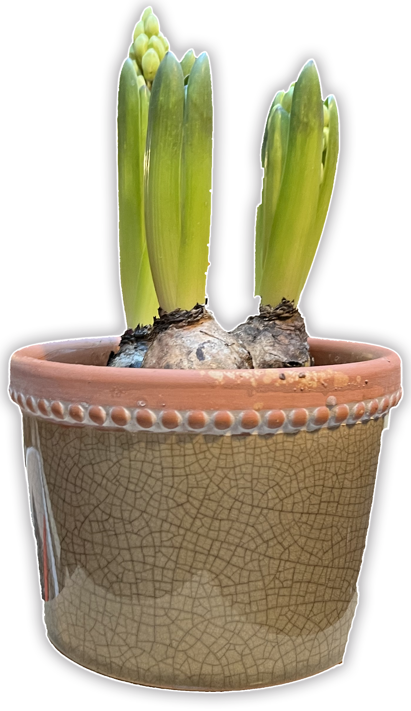
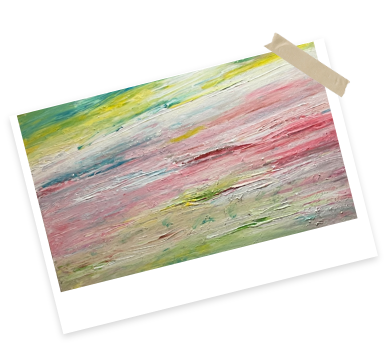
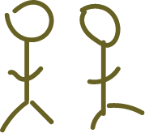

Wordt een
Administratief medewerker
Taakomschrijving:
Je bent verantwoordelijk voor de administratieve ondersteuning van het directieteam en je collega's, waaronder het afhandelen van juridische verplichtingen, het beheren van communicatie en het uitvoeren van diverse logistieke taken. Daarnaast coördineer je praktische zaken met vrijwilligers, zoals contracten, planning en communicatie.


Profiel:
- Integer, geëngageerd, respectvol
- Sterke communicatieve en administratieve vaardigheden
- Proactief, mobiel, verantwoordelijk
- Zelfstandig en teamgericht
- Interesse in Brusselse grootstedelijke gevoeligheden rond thuislozenproblematiek
- Bachelor sociale wetenschappen
- Tweetalig (Nederlands en Frans)
- Ervaring in werkveld en verslavingsproblematiek is een plus
Aanbod:
- Contract 1 VTE onbepaalde duur
- Paritair subcomité 319.00 loonbarema 4
- Maaltijdcheques
- 100% terugbetaling woon- werkverkeer
- Indiensttreding zo snel mogelijk
